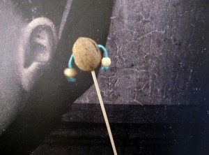
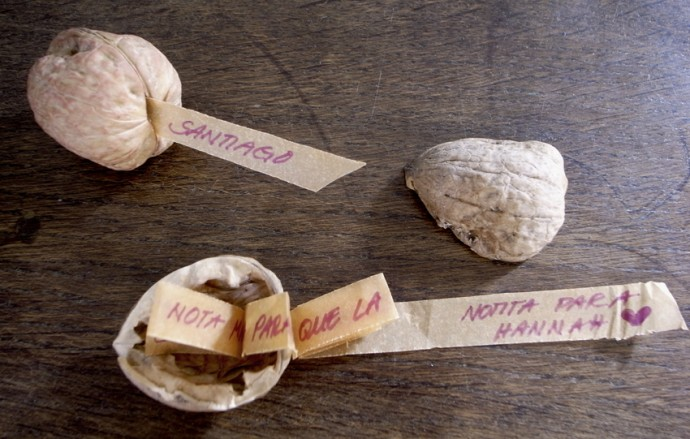

Nut music
Just a little thing... and the best of all: it doesn`t make a lot of noise.





With nutshells (divided in two) we built a tower. First one person and then anotherone puts a shell one over a the other... until the tower…
Read more →